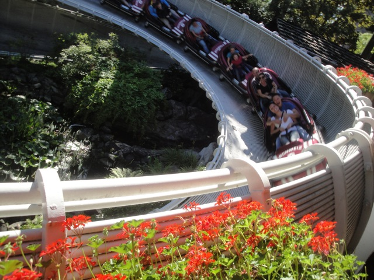
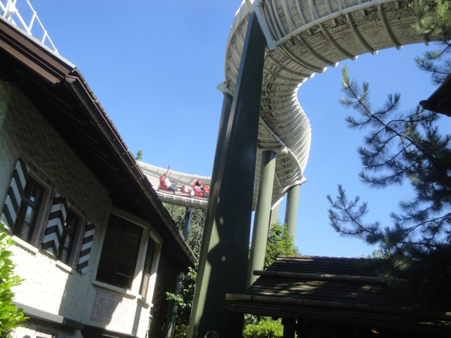
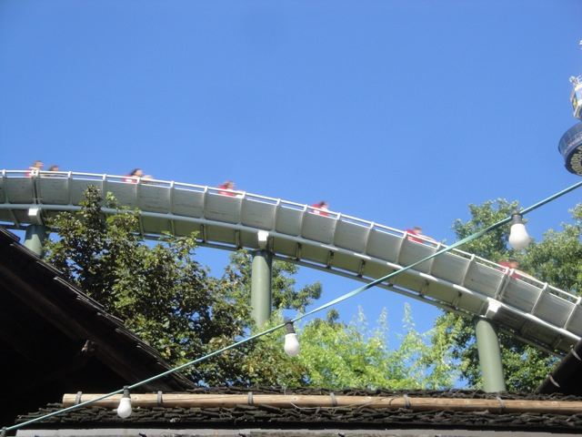
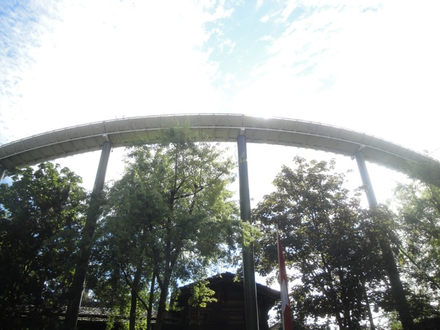
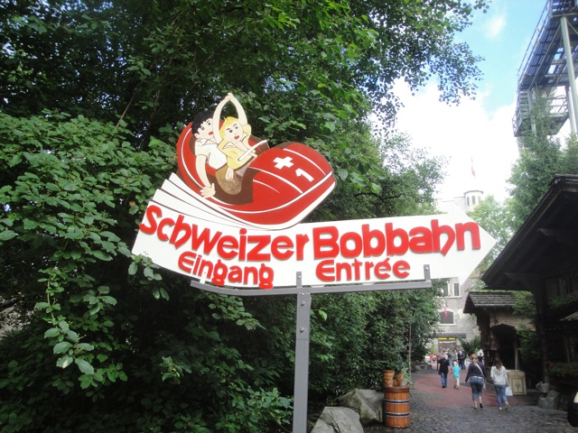

| |
Schweizer Bobbahn Review

Today at Europa Park, we're here to review Schweizer Bobbahn, the first Mack Bobsled coaster ever built, and possibly the first Bobsled coaster. So yeah. This was a big ride for Mack, Europa Park, and just a fun ride overall. We get in the cars, pull down the lap bar, and we're off. We go around a turn, go through a nice little farm tunnel and head up the lifthill, getting a nice view of Europa Park. We reach the top, head around a big turn around, see Silver Star, Euro Sat, amongst many other fun rides at Europa Park, and then we head down the first drop. It's not crazy, but we get some speed and have fun. We then rise up and head into a mid course brake. Yeah, these things are common on bobsleds. And speaking of bobsleds, now we get into what makes Bobsleds unique. Twisty helix bits. We head down and start to helix, only we start to zig zag, going through a left helix, going down into a right helix, switching back into a left helix that finally goes 360 degrees. Now I should mention that this is a bobsled, so we sort of...swing on these turns. We then take another tunnel before heading down a right helix that goes all the way again. We then head into another tunnel where the brakes are. Sadly, the ride is over. We just meander a bit back to the station. It's far from my favorite ride, but Schweizer Bobbahn is still a fun little ride, and I do appreaciate it for being the first Mack Bobsled, even if it is my least favorite one. It's still a fun ride and paved the way for better Bobsleds to be built.
6/10
Location: Europa Park
Opened: 1985
Built by: Mack
Last Ridden: June 25, 2012
Schweizer Bobbahn Photos




|